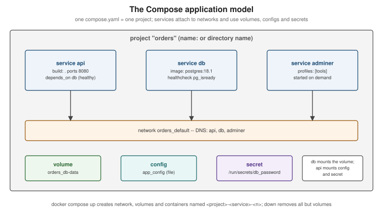

Docker Compose Fundamentals
|
This content was generated with the assistance of AI and should be verified against the official documentation before being relied on in production. |
Running one container with docker run is easy; running an application made of an API, a database, a cache and a
message broker with the right networks, volumes, environment and start order is not. Docker Compose describes that
whole application in one compose.yaml file and manages it with one command. This page covers Compose v5.5.x (the
docker compose plugin shipped with Docker Desktop 4.91 or later and installable on Docker Engine 29.8.x) and the
Compose Specification it implements; the more advanced how-tos are on Compose
in Practice.
Compose, the plugin and the Specification
Learning Docker (chapter 8) introduces docker-compose, the Python tool that grew out of Fig, with a
docker-compose.yml starting with version: '2'. All of that is historical:
| Then | Now |
|---|---|
Compose v1: a Python program invoked as |
Compose v2 (2020) is a Go rewrite invoked as |
File formats 1, 2.x and 3.x, selected with a top-level |
One rolling Compose Specification. The |
|
|
Derived from History and development of Docker Compose and
How Compose works. File format 1 files (no
top-level services: key) do not run at all with Compose v2 or v5.
docker compose version # Docker Compose version v5.5.1The application model
A Compose file describes a project made of:

| Top-level element | Meaning |
|---|---|
|
The containers to run: each service is an image (or a build) plus its runtime configuration, scaled to one or more containers. |
|
Networks the services attach to. Compose creates a default network per project, so services reach each other by service name. |
|
Named volumes, created on first |
|
Non-sensitive configuration files mounted into services. |
|
Sensitive data mounted as files under |
|
Other Compose files to import, AI models for Docker Model Runner, and an explicit project name. |
Derived from How Compose works and the Compose file reference.
A first compose.yaml: a web application and PostgreSQL
# compose.yaml -- development only: the credentials below are placeholders, not real secrets
name: orders
services:
api:
build: . # or: image: ghcr.io/myorg/orders-service:1.4.0
ports:
- "127.0.0.1:8080:8080"
environment:
SPRING_DATASOURCE_URL: jdbc:postgresql://db:5432/orders
SPRING_DATASOURCE_USERNAME: orders
SPRING_DATASOURCE_PASSWORD: ${DB_PASSWORD:-dev-only-password}
depends_on:
db:
condition: service_healthy
restart: unless-stopped
deploy:
resources:
limits:
cpus: "1.5"
memory: 768M
db:
image: postgres:18.1
environment:
POSTGRES_DB: orders
POSTGRES_USER: orders
POSTGRES_PASSWORD: ${DB_PASSWORD:-dev-only-password}
volumes:
- db-data:/var/lib/postgresql
healthcheck:
test: ["CMD-SHELL", "pg_isready -U orders -d orders"]
interval: 5s
timeout: 3s
retries: 10
start_period: 10s
adminer:
image: adminer:5
ports:
- "127.0.0.1:8081:8080"
profiles: ["tools"] # only started with --profile tools
volumes:
db-data:docker compose up -d --build # build api, create network and volume, start db, wait until healthy, start api
docker compose ps
docker compose logs -f api
docker compose exec db psql -U orders -d orders
docker compose --profile tools up -d
docker compose down # stop and remove containers and the network; keep the volume
docker compose down -v # ... and remove the named volumes tooDerived from Docker Compose Quickstart, Control startup and shutdown order and the postgres image documentation.
Service essentials
| Attribute | Notes |
|---|---|
|
Run an existing image, or build one ( |
|
|
|
Variables for the container. |
|
Named volumes ( |
|
Extra or custom networks; aliases per network. |
|
Start order. With |
|
Same fields as the Dockerfile |
|
|
|
Override the image’s |
|
|
|
Services started only when a listed profile is active. |
|
How long to wait after |
Derived from Services top-level elements.
Startup order and readiness
depends_on without a condition only orders container creation: the database process may not be accepting
connections yet. Give dependencies a real healthcheck and use condition: service_healthy; keep retry logic in the
application as well, because dependencies can also restart later. Derived from
Control startup and shutdown order.
Project names
The project name prefixes every resource Compose creates (orders-api-1, orders_default, orders_db-data) and
lets the same file run twice on one host. It is taken from, in order: -p/--project-name, the
COMPOSE_PROJECT_NAME variable, the top-level name: attribute, and finally the directory name. Derived from
Specify a project name.
Environment variables and interpolation
Two different mechanisms are often confused:
-
Interpolation —
${VAR}incompose.yamlis replaced before the file is used, from the shell environment and the.envfile next to the Compose file. Default and error forms:${VAR:-default}(default if unset or empty),${VAR-default}(if unset),${VAR:?message}(fail if unset or empty). -
Container environment —
environment:andenv_file:set variables inside the container.
When a variable is set in several places, the container sees (highest precedence first): docker compose run -e,
then environment/env_file values interpolated from the shell or .env, then a literal environment value,
then env_file, then the image’s ENV.
cat > .env <<EOF
DB_PASSWORD=local-placeholder
EOF
docker compose config # the fully resolved model: interpolated, merged, validated
docker compose config --environmentDerived from Interpolation
and Environment variables
precedence. docker compose config is the fastest way to find out what Compose will actually do.
The CLI at a glance
docker compose up -d --build --wait # start in the background; --wait blocks until services are healthy
docker compose ps -a
docker compose logs -f --tail 100 api
docker compose exec api sh # a shell in a running service container
docker compose run --rm api ./mvnw -q test # a one-off container for the service
docker compose restart api
docker compose pull # fetch newer images for image-based services
docker compose watch # sync or rebuild on file changes (see Compose in Practice)
docker compose down -v --remove-orphansDerived from docker compose CLI reference.
The Learning Docker chapter 8 example, rewritten
The book links a web container to a Redis container with links: in a Compose v1 file run by docker-compose
(historical, shown for comparison only):
# 2015: docker-compose.yml for Compose v1 (file format 1, no services key) -- historical
web:
build: .
links:
- redis
ports:
- "5000:5000"
redis:
image: redisThe same application in the Compose Specification needs no links — the project network and its DNS resolve
redis by service name — no version: key, and a pinned image:
# compose.yaml, run with: docker compose up -d
services:
web:
build: .
ports:
- "127.0.0.1:5000:5000"
depends_on:
- redis
redis:
image: redis:8.2Derived from Services top-level elements (build,
ports, depends_on, image) and History and development of Docker
Compose (Compose v1 and the file formats it replaced).